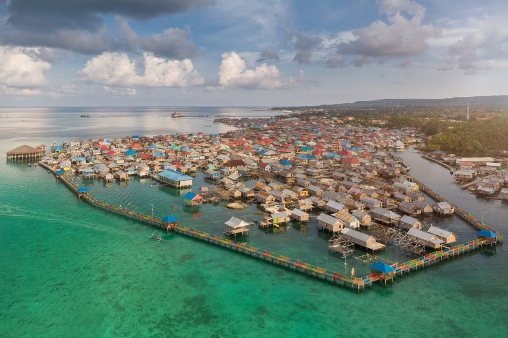
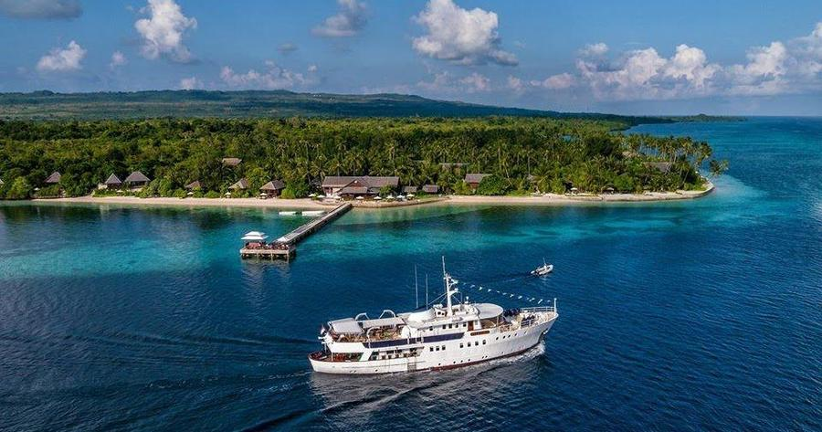

Wangi-Wangi
Pintu gerbang Wakatobi. Destinasi: Pulau Hoga, Pantai Marina, Dermaga Matahora.
JelajahiSurga bawah laut Indonesia yang memukau dengan keanekaragaman hayati terbaik di dunia.
Wakatobi adalah kepanjangan dari empat pulau utama: Wangi-Wangi, Kaledupa, Tomia, dan Binongko. Terletak di Provinsi Sulawesi Tenggara, Wakatobi merupakan bagian dari Taman Nasional Laut terbesar di Indonesia dan salah satu destinasi diving terbaik di dunia. Setiap pulau memiliki keunikan alam, budaya, dan destinasi wisata yang memikat.

Pintu gerbang Wakatobi. Destinasi: Pulau Hoga, Pantai Marina, Dermaga Matahora.
Jelajahi